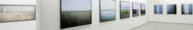

Grotta di Pastena
Useful Information
| Location: |
Near Pastena.
Autostrada "del Sole" A1 Roma-Napoli exit at Ceprano. From Pastena follow the road to Castro dei Volsci for 4.5 km, then turn right on a cul-de-sac road to the cave (signposted), 1 km. (41.4966672, 13.4896289) |
| Open: |
All year daily 10:30-18:30, last entry 17:30. [2018] |
| Fee: |
Adults EUR 9, Children (6-12) EUR 6, Children (0-5) free. Groups (20+): Adults 7, Children EUR 6. [2018] |
| Classification: |
 Karst Cave
river cave, Karst Cave
river cave,
 cave with a view. cave with a view.
|
| Light: |
 Incandescent Incandescent
|
| Dimension: | A=165 m asl |
| Guided tours: | D=60 min, L=1,100 m. V=40,000/a [2000] V=32,000/a [2008] |
| Photography: | |
| Accessibility: | |
| Bibliography: | |
| Address: |
Grotte di Pastena e Collepardo, Via Porta Napoli, I-03020 Pastena, Tel: +39-0776-545011.
E-mail: |
| As far as we know this information was accurate when it was published (see years in brackets), but may have changed since then. Please check rates and details directly with the companies in question if you need more recent info. |
|
History
| 1927 | show cave opened to the public. |
Description

Grotta di Pastena is an impressive river cave with huge passages. The tour shows two different parts of the cave: first a waterfilled section of 200 m and then a dry part, which is 900 m long and shows many formations. The visitor arives at the cave on the parking lot, right on top of the entrance portal. After buying a ticket, the path leads down to the cave entrance, some 40 m below. Here the tours into the cave start.
In summer a dry river bed, filled with gravel, is the floor of the first, pretty huge part of the cave.
But without water the most important specialty is not visible to the visitor: this river flows into the cave, which makes the cave a huge
 ponor
or sink.
The river drains the valley above, which has no surface drainage.
Such valleys are called
polje.
ponor
or sink.
The river drains the valley above, which has no surface drainage.
Such valleys are called
polje.
The first huge passage ends and the path follows a narrow passage to the next chamber of this lower, still active river cave. Here we find some water, ground water which drains underground, through the gravel into the cave all the year. The big entrance part is reactivated only during winter rains.
The lower passage is very damp and misty, the stalagmites are influenced by the frequent floodings, looking somewhat clinched. The path of the show cave follows the river 200 m downstream, where the visitor has to turn around. Cavers followed the underground river bed to the other side, where the water reappears in a huge karst spring near ??.
Back to the turn off we follow the upper dry branch. This part is really overwhelming, with numerous huge and glittering speleothems, stalagmites and stalactites, organs and curtains of extraordinary size and beauty. This passage is so impressive, that the necessity to return the same way is much appreciated!
All in all, this cave is one of the most satisfying show caves we reviewed in Italy.
|  |
| Grotta di Pastena Gallery |
 Search DuckDuckGo for "Grotte di Pastena"
Search DuckDuckGo for "Grotte di Pastena" Google Earth Placemark
Google Earth Placemark OpenStreetMap
OpenStreetMap Grotte di Pastena, official site. (
Grotte di Pastena, official site. ( )
) Index
Index Topics
Topics Hierarchical
Hierarchical Countries
Countries Maps
Maps{kind=link}